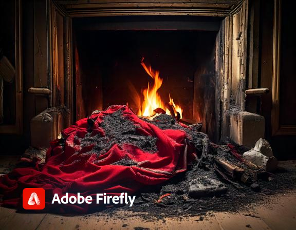

Réflexion finale
Cette enquête m'a révélé que l'ombre fait souvent croître le mystère. Grâce à un oeil attentif et des indices décisifs, nous avons enfin pu résoudre l’affaire et rendre justice à Lucie.
Rôle: Détective Jean Dupont
Introduction: Une victime, Lucie Martin, est retrouvée morte, visiblement tombée de la cheminée dans une tentative désespérée de cacher son corps. L'obscurité enveloppe le meurtre, chaque ombre racontant une histoire…
À mon arrivée, l'air était chargé d'une odeur de cendres brûlées et de mystère. Des morceaux de vêtements déchiquetés jonchaient le sol, témoignant d'une lutte féroce. La chemise rouge de la victime, maintenant saturée de secrets.
La pièce était si sombre que chaque souffle semblait murmurer des secrets enfouis. Une odeur de brûlé flottait dans l’air, enveloppant la scène d'une atmosphère pesante et menaçante.
Détective Jean Dupont: Qu'avez-vous vu, Madame Leblanc?
Témoin Madame Leblanc: J'ai entendu des cris déchirants et des bruits de lutte... une silhouette a fui dans la nuit. J'ai eu peur... L'obscurité semblait la cacher.
Une empreinte digitale glaciaire sur un verre dans la cuisine et une note brûlée scintillant près de la cheminée... ce détail pourrait être la clé d’un mystère plus profond.
Voisin Monsieur Bernard: J'ai observé une silhouette en manteau noir, tremblante, entrer dans la maison. Des bruits étranges qui faisaient écho comme des hennissements ont dérangé la nuit.
Le téléphone de Lucie a vibré avant qu'elle ne perde la vie, laissant une empreinte d’interrogation… Qui interroger en premier ? L’horreur est à nos portes.
J'ai confronté Alex face à face. Au début, il a nié, son regard trahissant une peur sourde. Puis, il a avoué… La dispute était telle qu’il a voulu cacher le corps. Il a insinué que Clara l’avait poussé à agir ainsi.
Clara, affolée par les accusations, se débat dans le flot d'émotions... "Lucie avait bien des problèmes avec Alex," dit-elle, mais qui est vraiment coupable dans ce jeu d'ombres ?
Avec chaque preuve que j'ai trouvé, j'ai fait face aux policiers. C'était Alex qui avait ôté la vie à Lucie, consumé par la jalousie. Le suspense a finalement pris fin.
Cette enquête m'a révélé que l'ombre fait souvent croître le mystère. Grâce à un oeil attentif et des indices décisifs, nous avons enfin pu résoudre l’affaire et rendre justice à Lucie.